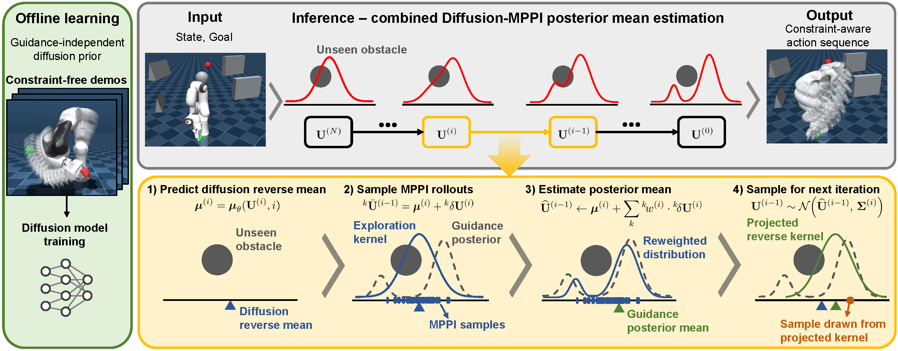
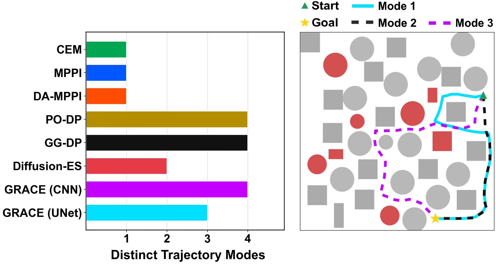
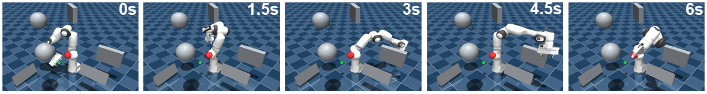

GRACE: Gradient-Free Robot Action Generation
via Combined Diffusion–MPPI Posterior Estimation
Abstract
Diffusion policies generate multimodal robot action sequences from demonstrations, but steering them toward deployment-time constraints typically relies on differentiable guidance costs. This excludes many practical safety constraints, such as binary collision checks, joint limits, and black-box rollout costs, that are nondifferentiable. We propose Gradient-free Robot Action generation via Combined diffusion–MPPI posterior Estimation (GRACE), which guides a pretrained diffusion policy with Model Predictive Path Integral (MPPI) control using only forward cost evaluations. We show that the diffusion reverse step and the MPPI update share a common score-ascent structure. This lets us recast each constrained reverse step as a Bayesian posterior and approximate its mean with a single MPPI update centered at the diffusion prior mean, integrated directly into denoising rather than wrapped around it as an outer loop. Under this view, gradient guidance emerges as a special case that holds only when the cost is differentiable. GRACE thus enables constraint-aware generation without retraining the diffusion model or designing differentiable surrogates. Across simulation and real-world robot experiments, GRACE attains higher success rates and fewer safety violations than both gradient-guided diffusion policies and sampling-based planners.
Method Overview

Fig. 2. GRACE inference pipeline. A pretrained diffusion prior proposes an action-sequence distribution, and at each reverse step an MPPI update reweights sampled candidates using deployment-time constraint costs. This directly steers reverse diffusion toward constraint-aware actions without differentiating the cost or the dynamics.
Key Results and Visualizations

Fig. 4. 2D point-mass navigation results. The mode-count bar chart summarizes trajectory diversity, while the representative trajectories show the distinct detours produced by GRACE. Together, these results show that GRACE preserves multimodality while biasing the prior toward constraint-satisfying solutions.

Fig. 5. Representative FR3 execution snapshots. GRACE reaches the target while satisfying obstacle avoidance, self-collision avoidance, floor-contact avoidance, and joint-limit constraints.
3D Quantitative Results
Table III. Quantitative comparison in the 7-DoF FR3 manipulator goal-reaching task.
| Method | Success [%] | Computation Time [ms] | Guidance Time [ms] |
|---|---|---|---|
| CEM | 24/30 (80.0%) | 153.45 | — |
| MPPI | 23/30 (76.7%) | 29.88 | — |
| DA-MPPI | 23/30 (76.7%) | 154.22 | — |
| PO-DP | 11/30 (36.7%) | 647.30 | 220.01 |
| GG-DP | 15/30 (50.0%) | 671.59 | 244.72 |
| GRACE (CNN) | 27/30 (90.0%) | 179.23 | 90.53 |
| GRACE (UNet) | 27/30 (90.0%) | 497.64 | 85.88 |
GRACE achieves the best success rate in the 3D FR3 task, reaching 90.0% for both backbones while avoiding the broad range of safety failures observed in gradient-guided baselines. Compared with PO-DP and GG-DP, GRACE also reduces guidance time while preserving the feasibility of the diffusion prior.
Experiment Videos
2D point-mass navigation under unseen obstacles.
3D FR3 simulation showing constraint-aware goal-reaching.
Real-world FR3 deployment without retraining or differentiable guidance.
BibTeX
@article{anonymous2026grace,
title={GRACE: Gradient-Free Robot Action Generation via Combined Diffusion-MPPI Posterior Estimation},
author={Anonymous Authors},
journal={Under Review},
year={2026},
url={https://anonymous.4open.science/w/grace-70BB/}
}